ПОЧАТОК🥺
Перше наше літо було незабутнім і особливим, саме літом 2018 року
почалась наша історія(насправді раніше) довгої і міцної друбжи
.jpg)
Це одне з наших перших фото 08.07.2018, коли ми почали по троху
розуміти, що може ми і суки, але не такі різні як нам здавалось😃
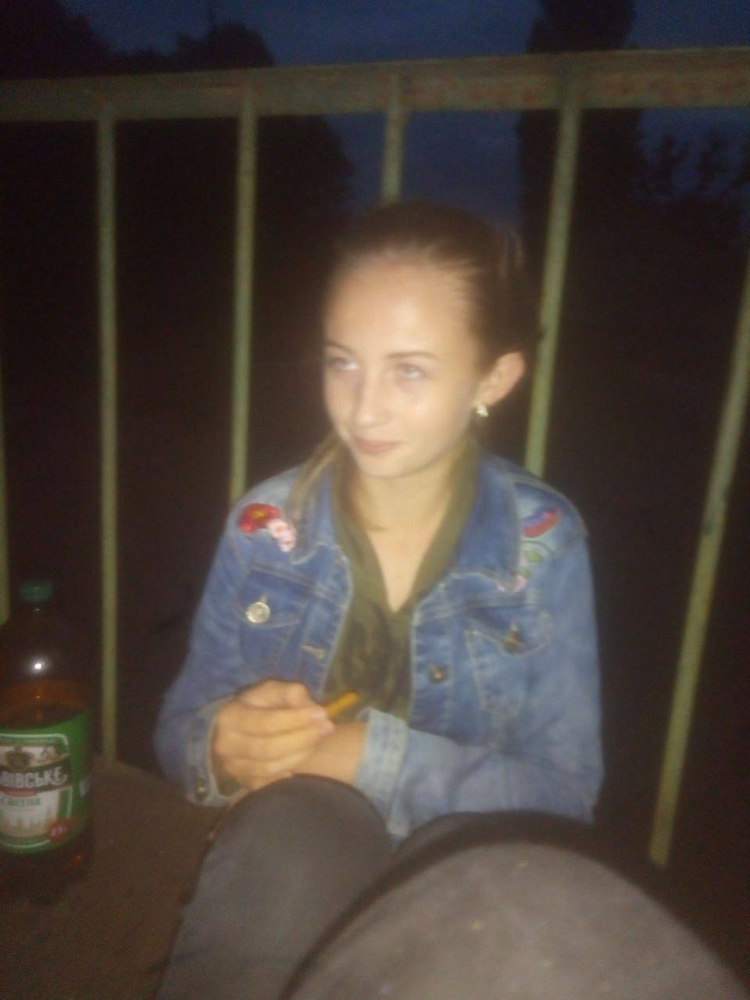
Почали більше спілкуватись і знаходити все більше спільних тем.
Зрозуміли що хлопці потрібні по суті тільки щоб стріляти сіги і це
не обов'язково мають бути ті самі хлопці🥰
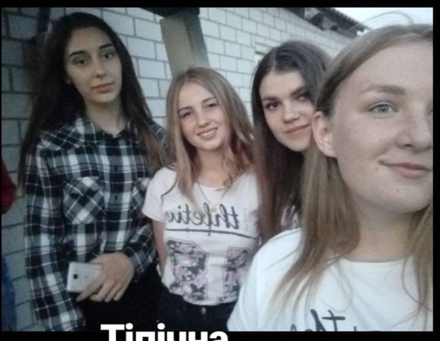
Часто їздили в Клеховку і десь там зародилась наша тема про те, що
ми лезбійська пара для відлякування(а іноді і навпаки) хлопців
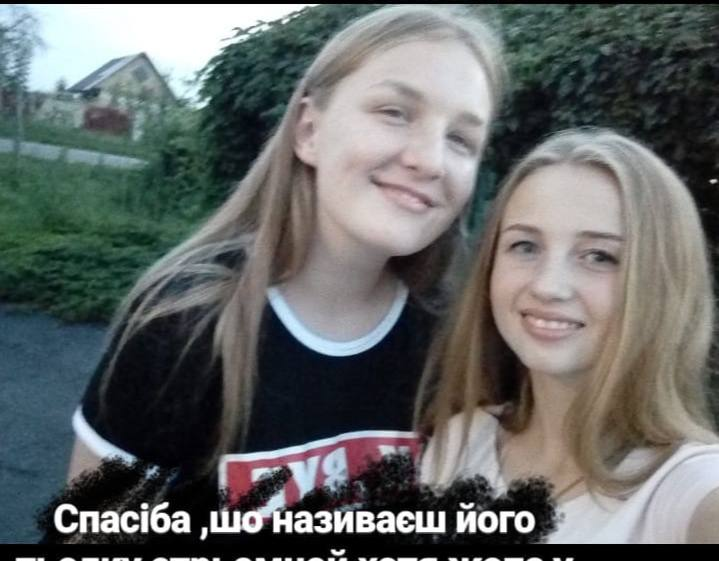
Проводили багато часу тільки вдвох, бо більше нам ніхто і не
треба. Ти підтримувала мої постійні любовні інтереси, хоча ми
обидві знали, що нічого з цього не вийде і я цьому дуже вдячна
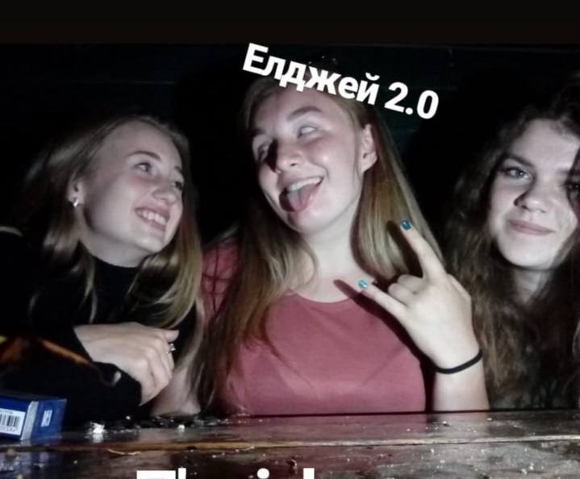
Ми пізнавали один одного, наш зв'язок зміцнювався.Проводили
забагато часу в бісєдках і думали як би нам поїхати разом до твоїх
родичів у Полтаву чи на западну, та хоть куди аби тільки разом
Дружба на відстані😔
Хоча ми і знали з самого початку що в кінці літа я переїду до
Польщі і ми не зможемо так багато часу проводити разом, я знала,
що ми зможемо і ця дружба на довгі роки
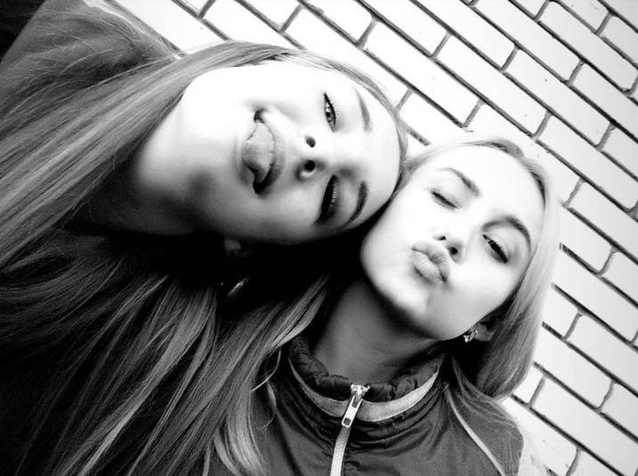
Я завжди з нетерпінням чекала повернення додому, бо там мене
чекала ти🥺 Пам'ятаю як кожен раз хвилювалась перед зустріччю
після довгої розлуки. Стільки всього треба обговорити, нового
розказати, але головне було просто побачитись хоч і на короткий
період.
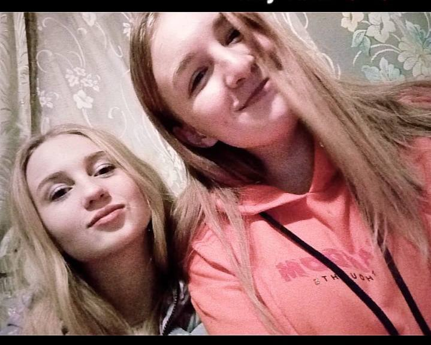
Мені дуже не вистачає наших вечорів разом. Ну і звичайно мої
улюблені післяобідні посиденьки під папіроску і каву з розмовами
про вчорашній бухіч або просто про все на світі, головне до 16:40,
бо десь в 5 повертається з роботи твій тато😅
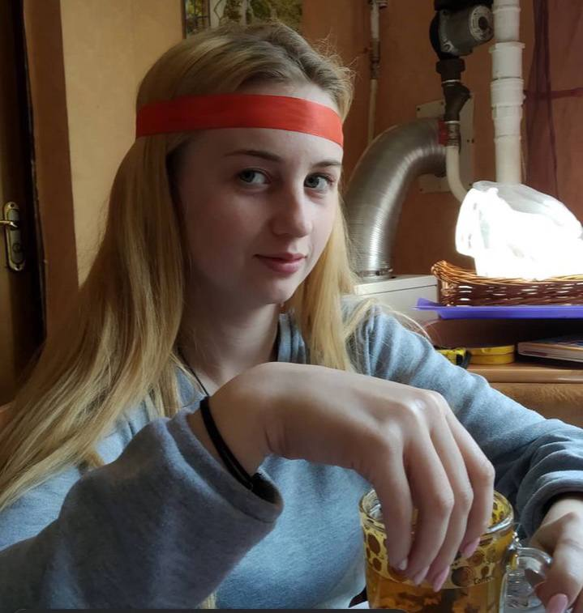
За період нашого спілкування все навколо змінювалось, ми були у
різних компаніях, жили у різних містах, але ми залишались разом не
дивлячись ні на що. Сподіваюсь так буде завжди
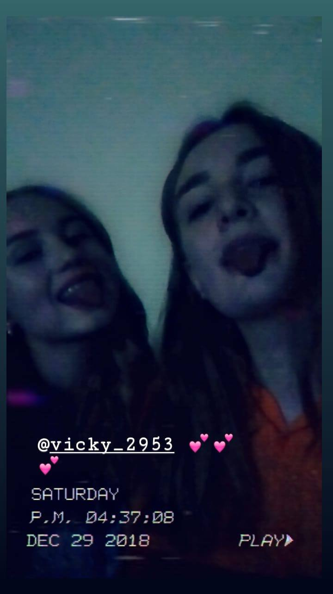
Якість цього фото відповідає якості алкоголю який ми тоді вживали,
але цей день був особливим. 31.12.2018, наш перший Новий Рік у
якості найкращих подруг. Ми відмічали його разом, не тому що
гуляли в одній компанії чи так склалось, а тому що ми цього
хотіли, і не важливо хто ще там був, головне було щоб ми були
разом
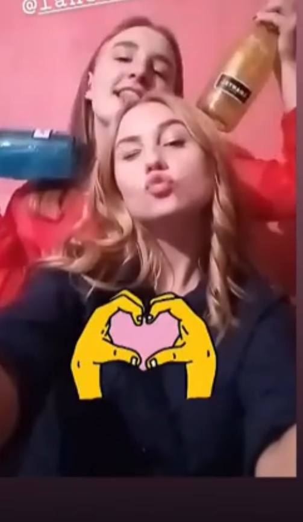
Це фото(а взагалі то скрін з відоса) ще з періоду початку, але я
не могла не додати його сюди. Не можу сказати, що дружба на
відстані це легко, але воно того варте. Це надзвичайно приємно
мати людину з якою вас стільки всього зв'язує і не важливо
бачимось ми кожен день чи раз на рік, ця людина залишаєть дуже
близькою твому серцю.
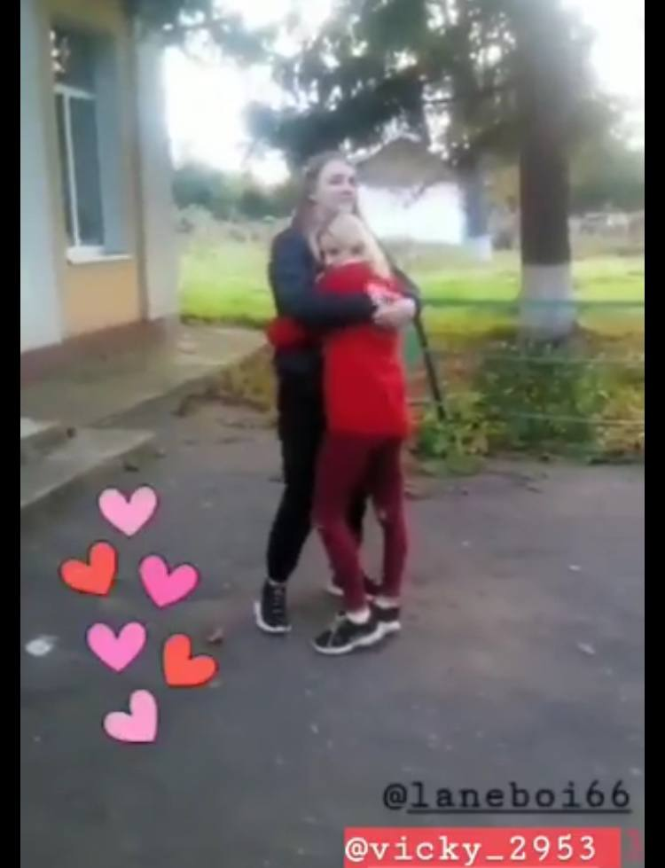
Ти неймовірна, Любов моя єдина, я завжди хотіла бути схожою на
тебе, бо ти особлива, ти дуже розумна і мудра, добра(навіть якщо
ти думаєш, що це не так) незалежна у своїх поглядах і просто дуже
крута. Для мене ти завжди залишаєшся такою молодою і прекрасною,
моєю жінкою і матір'ю наших загублених дітей.Бачити як ти
змінюєшся, ростеш найбільша радість для мене, в тому числі завдяки
тобі змінююсь і я, за що я тобі дуже вдячна
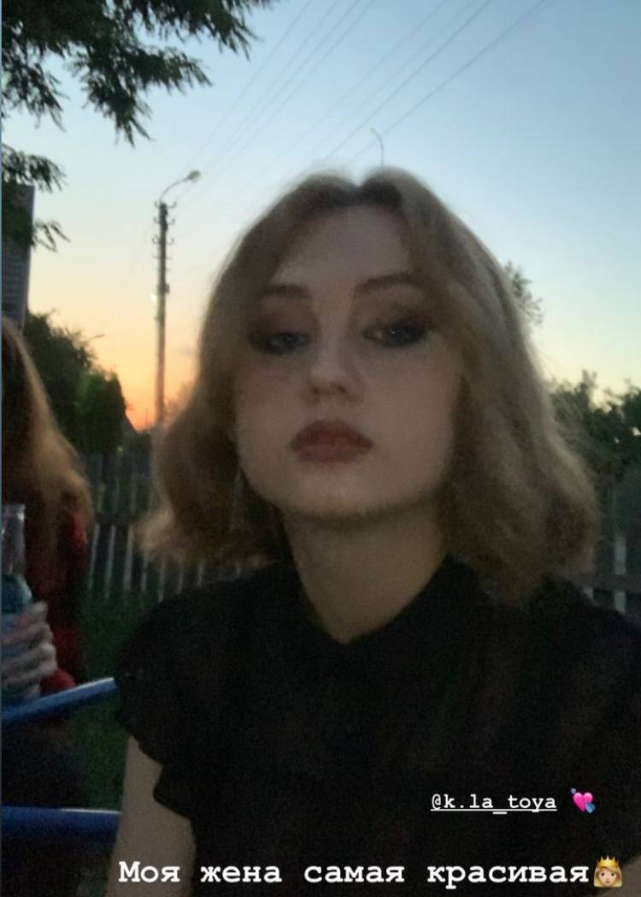
Життя звело нас разом дуже дивним способом і як би мені не
хотілось для тебе кращої долі я рада, що у складні часи ми знайшли
одна одну. Але мені хочеться вірити, що якби не так, то доля б
знайшла шлях звести нас разом, бо я не уявляю свого життя без моєї
Компанець(тепер Будир)
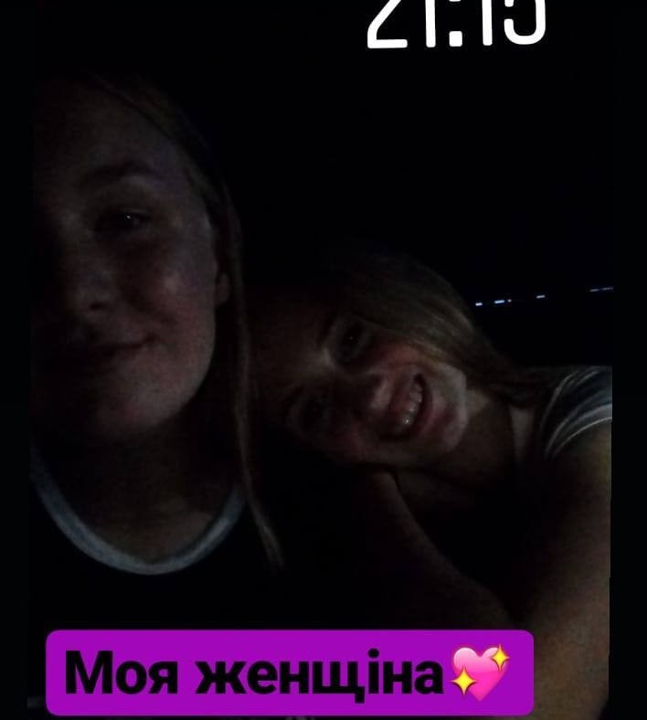
Зовсім не давно я видала тебе заміж🥺 🥺 🥺 Я неймовірно рада
бачити тебе такою щасливою і знати, що ти у надійних руках. "Я
завжди знала, що ти знайдеш своє кохання.Ти завжди вміла створити
навколо себе атмосферу тепла і затишку...Ти заслуговуєш на це
щастя" - це цитата з мого тосту на вашому весіллі(момент був не
той і всім вже було не до цього),тому продублюю його тут, бо це
те, що я б хотіла щоб ти почула.

Дуже багато хотілось би написати про те, як я тебе люблю і яка ти
мені дорога, але слів у всіх мовах світу не вистачить, щоб цього
передати. Вже більше 6 років я насолоджуюсь думкою про те, що маю
таку подругу як ти. Я довго писала цю сторінку, бо дуже хотілось
все гарно розписати, постійно вносила правки, але зрозуміла, що
ідеалу не буде, бо найкраще було б вітати тебе особисто. Добре,
годі про сумне, ми зібрались тут, щоб привітати тебе з Днем
Народження, цим я зараз і займусь. Дорога моя Торка, вітаю тебе і
як завжди бажаю тільки всього найкращого, безмежного щастя, любові
та гармонії🥰Щоб всі цілі були досягнені і життя складалось тільки
так як ти хочеш(не тільки ж я завжди права😁) Це щастя - мати таку
подругу як ти🥺 З ДНЕМ НАРОДЖЕННЯ!!!🥳❤️
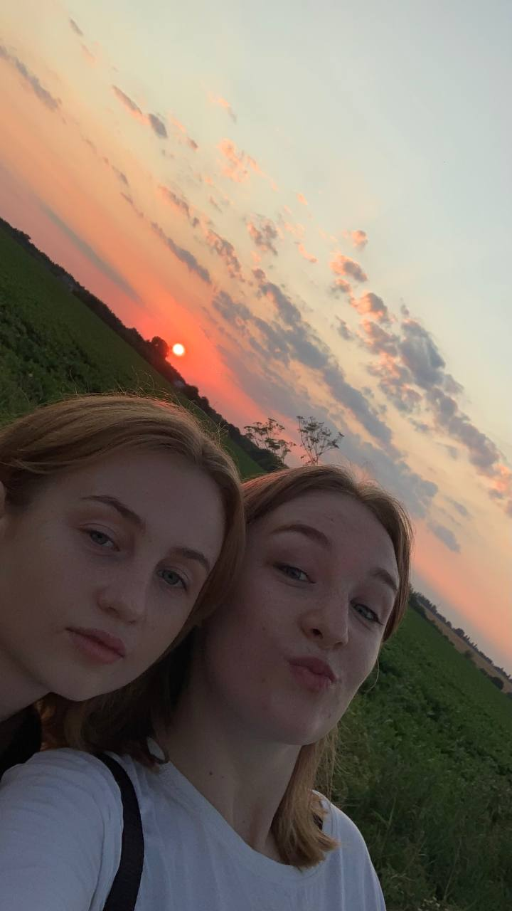